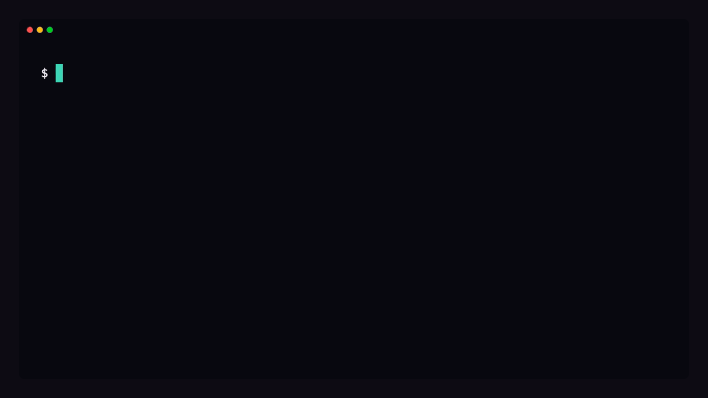

Static indexes suggest; this verifies — against your running instance.
The local-first verification & deploy gate for AI-written Odoo changes: it reads ground truth
from your live instance — fields, MRO & super() chains, views, security, runtime
flow — builds the smallest correct change, proves it with a test, and gates the merge.
No SaaS, no seats, no API key — nothing leaves your box.

Field names, the method-resolution order, the rendered view arch, record
rules — none of it is reliably knowable from memory or grep. It exists only in
the running instance. Left to memory, LLMs fail silently at runtime, not at lint time:
Dump the model/flow as JSON from the live registry before writing a line.
Smallest extension at the right hook and MRO layer, with the correct depends.
Prove it: non-admin, multi-company, batch, -i/-u — fail-before, pass-after.
Catch security / data-loss / silent-correctness / perf defects before merge.
One command — odoo-ai all <model> — runs inside odoo-bin shell
and prints pure JSON the agent reads before any code. Then Layer I turns that evidence into an
enforced merge/deploy gate.
Fields (+ selection literals, ondelete/domain), MRO + super() analysis, security (ACL + record rules), auto-triggers, recommended depends.
Form/list buttons → method/action, view modifiers, and the resolved view inheritance chain for xpath work.
Menu graph, seeded ir.model.data + noupdate records, deep QWeb report wiring.
The real runtime call sequence + SQL across addons — executes on a throwaway record, rolls back.
Reverse impact of a field — every compute/related/view/rule that breaks on a rename or drop.
Runtime values at a breakpoint + exception post-mortem. Redacts secrets by default.
Effective per-user/company access — combined ACL + record-rule domain via Odoo's own combiner; the sudo() blind spots.
Does Odoo already ship this? Native surface + native-check gate-then-rank over curated cards, existence-gated against the instance.
Layer I — enforcement gates (local, no DB): scenario-test generator · env parity/drift · static anti-pattern validator · enforced privacy redaction · upgrade/migration harness · deploy-gate (approve / needs-human / block) + a PR-comment evidence bundle · a bring-your-own-index claim verifier. Layer J — a local Odoo developer-docs index. Bring any static index or agent; this verifies it against your running instance.
The brief said action_confirm is owned by sale (bottom of the MRO),
commitment_date is a sale field, and the confirmed state is 'sale' — not 'confirmed'.
So the patch is four correct lines, and the test asserts the real literal.
# 1) introspect odoo-ai --db dev all sale.order --methods action_confirm # 2) smallest correct patch — guard before super(), depends = ['sale'] class SaleOrder(models.Model): _inherit = "sale.order" def action_confirm(self): for order in self: if not order.commitment_date: raise UserError(_("Set a Delivery Date first.")) return super().action_confirm() # 3) prove it — real state literal self.assertEqual(order.state, "sale") # NOT 'confirmed'
It's a Claude Code plugin and its own marketplace. Skills load namespaced
(/odoo-ai-skills:odoo, …).
# register the marketplace, then install claude plugin marketplace add tuanle96/odoo-ai-skills claude plugin install odoo-ai-skills@odoo-ai # gather ground truth before writing code odoo-ai --db <DB> all sale.order --methods action_confirm
Requirements:
Odoo 17 / 18 / 19; shell access to odoo-bin shell on a dev/staging DB. On
SaaS / Odoo Online (no shell), field metadata still comes back over RPC — the deeper
layers (MRO, runtime trace) need a dev copy you can shell into.